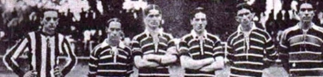
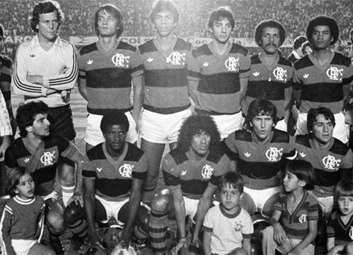

Se na época da fundação do Flamengo o remo reinava absoluto como esporte favorito dos cariocas,
em pouco tempo outra modalidade começou a rivalizar pela preferência do público: o
futebol.
E o Flamengo estava predestinado a ter papel de protagonista nesta nova paixão
nacional.
Em 1911, houve um desentendimento interno no Fluminense. Alguns jogadores falavam trocar de
clube, enquanto outros até mesmo pensavam em abandonar o futebol. Foi quando Alberto Borgerth,
um dos jogadores do Fluminense, fez a proposta de criar uma seção de futebol no Flamengo, onde
já era remador. A ideia foi aprovada e, no dia 8 de novembro daquele ano, foi
criado o Departamento de Esportes Terrestres rubro-negro.
A nova equipe chamava a atenção e dava os primeiros passos para ganhar enorme popularidade
treinando na Praia do Russel. Em 3 de maio de 1912 acontece a primeira partida do,
Flamengo: uma grande vitória de 15 x 2 sobre o Mangueira, no campo da América. A
escalação rubro-negra naquele jogo foi Baena, Píndaro e Nery; Coriol, Gilberto e Galo; Bahiano,
Arnaldo, Amarante, Gustavo e Borgerth.
Não demorou muito para vir o primeiro título: em 1912 o Flamengo ganhou seu primeiro Campeonato
Carioca. A conquista veio com uma rodada de antecedência, após a vitória de 2x1
sobre o Fluminense. Riemer fez o gol do título.

A primeira camisa do futebol foi a "Papagaio de Vintém", quadriculada em vermelho e
preto. Em 1914, a equipe passou a atuar com a "Cobra-Coral", que tinha listras
horizontais rubro-negras convivendo com listras mais finas e brancas e foi utilizada pela equipe
do primeiro título estadua (na foto). O manto Sagrado passou a ter apenas listras
horizontais vermelhas e pretas a partir de 1916, quando o novo uniforme estreou em uma vitória
de 3x1 sobre o São Bento, de São Paulo.
Museu Flamengo - Em expansão! Abriremos no primeiro semestre de 2023.
